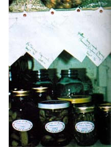

Cut your gardening costs! Become more food self-sufficient! Create new varieties of vegetables that grow best right in your own (and nobody else's) back yard! And have a lot of fun in the process.
One gardening encyclopedia tells its readers not to save seeds since they're so plentiful and inexpensive that it's not worth the bother. Oh yeah? Take a careful look at your colorful new seed catalogs . . . and then tell me that seeds aren't expensive. Until recently, my yearly order cost between $20 and $25 . . . and I suspect my case is not unusual.
It's not necessary, though, to spend $20 or $10-or even $5.00-each year on seeds. I've found that by saving seeds from my own garden and then planting them the following year, I've been able to cut my annual seed bill in half . . . despite the fact that the few seeds I do buy have risen sharply in price, and despite the fact that I like to experiment with exotic (and generally expensive) plant varieties. If you have a comparatively large garden-or if you can discipline yourself to resist those glowing seed catalog pictures and descriptions (something I haven't entirely been able to do)-you could easily save even more on your seed bill.
This year, then, why not plan to collect, store, and use some of the seed your own garden gives you for free? It isn't hard to do . . . and the rewards (if you ask me) more than justify the small amount of effort involved.
Before we get into the actual "here's !sow" of preserving seeds, I'd like to offer a few observations that could save you a good deal of frustration and-possibly - disappointment.
First of all, hybrid varieties (you'll see the word "hybrid" in the seed catalog description or in the vegetable's name) do not always breed true to type. Thus, the seed from last season's mammoth tomatoes may only produce scraggly plants bearing tiny red buttons next season. To avoid this problem, always start with standard (i.e., non-hybrid) vegetable varieties, or else stick with hybrids that you know will breed true.
Second, if you plant two or more standard varieties of corn (or squash or tomatoes, or any of the flowering vegetables) you're likely to have crosspollination by wind and/or insects, leading to seed of uncertain quality. (Of course, the resulting hybrid you end up with may turn out to be of higher quality than the two varieties with which you started . . . but that's highly unlikely.) You can-and shouldminimize crossfertilization by planting only one variety of corn (or squash, tomato, etc.) at a time and locating your plot as far as possible from your neighbor's patch.
Third, keep in mind that many common vegetables (the root crops, cabbages, parsley, and brussels sprouts) are biennial . . . that is, they don't form seed pods until the second year. Here in Minnesota, such vegetables have to be mighty hardy to survive an entire winter in the ground. (Beets, for instance, aren't that hardy and-as a result-I'm obliged to purchase new beet seeds each year.) I always leave a few carrots in the garden over the winter months, however, since carrots are by nature cold-resistant. The following spring, they produce tops that grow about two feet tall, then send out white flowers that resemble Queen Anne's lace (the wild plant from which carrots were originally developed). Eventually, tiny seeds form and you can collect them.
Pick fleshy vegetables (such as tomatoes, squash, and melons) when they're fully ripe, then scoop out their seeds an spread them to dry in a well-ventilate place. Beans and peas need only be left on the vine until the pods are dry an crackly. Corn, likewise, should be left t dry on the stalk until the kernels dent. Other types of seed may be gathere when they're fully formed, hard, an filled with "meat". Remember to collect seeds only fro the most vigorous plants in you garden, and not just from the first fe ripe specimens you happen to encounter. By selecting seeds from just the healthiest plants, you'll be able-ove time-to create special sub-varieties o these crops that are especially well adapted to your particular climate and soil.
Also remember to label and stor your free bonanza as soon as possibl after harvesting. You may think you'll be able to recall the name of each kin of seed, but believe me-it's easy t get confused. Some (those for broccoli cabbage, and cauliflower, for instance resemble one another quite closely.
Regular correspondence-size envelopes make good containers for storin small quantities of most kinds of seed since they can be sealed and labele quite conveniently. For larger quantities, I use glass jars. (They take up more space than envelopes and are break able, but you can see inside them.)
To label the seed, I write the name of each kind of vegetable, the particular variety, where and when I originally bought the seed, and the month and year of harvest on the outside of each container. Example: Bush snap beans -Blue Lake-Park's (1970)-August 1976.
The key to successful long-term seed storage is keeping your c ache cool and dry. If you store your seeds where the air is moist, they may sprout and/or become mildewed. (Tip: You may want to put a small amount of powdered milk into each storage container to act as a desiccant.) Likewise, mold growth occurs at a faster rate in warm air than it does in cool air.
Potato and onion sets may be stored in open boxes or hung in mesh bags in a place where the temperature is 35° to 40°F and the air is not overly dry. We store ours in a frost-free fruit cellar along with our canned goods and winter squash. (My neighbor, on the other hand, has had good luck squirreling away his eatin' spuds and seeds in a fourfoot-deep pit dug in a sandy, welldrained spot. When he unearths them in early May, the potatoes and seeds look just like they did the previous September . . . and not a single sprout!)
Some seeds keep much longer than others. The following chart will give you an idea as to the minimum length of time properly stored seeds will remain viable. TYPE OF SEED USEFUL LIFE (YEARS)
Some of the above seeds may-depending on the particular variety and the storage conditions-remain usable for up to ten years . . . although, of course, you shouldn't depend on such extraordinary viability.
Years ago, I helped carry out germination tests for a large store that bought seed in bulk and repacked it in small packets for resale. Since the manager carried his unsold stock over from year to year, it was important for us to know how many seeds in a particular batch would sprout when planted.
Here's what we did: First, we placed moistened cotton in a petri dish . . . then we
[1] put exactly 100 seeds on top of the damp cotton,
[2] covered the dish,
[3] left it at room temperature for a certain number of days, and
[4] counted the number of seeds that had begun to grow. If 90 out of 100 seeds sprouted, the germination rate was listed as 90%. This was considered good.
I do essentially the same thing with my seeds now, except that I only use ten seeds per test, and I only test seeds that are more than a year old. (If the seeds are less than two years old and look good, I assume that their germination rate is acceptably high.)
Any plastic or glass container that'll hold a damp blotter, damp newspaper, or moistened cotton (along with the seeds) will work as well as a petri plate. Just remember to label your containers with the date of the test and the variety of seed being tested. Then-after a week or so-check them. If eight out of ten seeds in any given test sprout, you can assume the germination rate to be 80% (which is, of course, plenty good).
Homegrown seeds have many uses, in addition to serving as the source of next year's garden vegetables. Pumpkin and squash seeds, for instance, are extremely tasty and nutritious when roasted. (My wifewho's spent three years in Turkey-tells me the people in that country eat squash seeds the way we gobble peanuts.) Dried peas make good pigeon food, if you're into raising squabs (although it does take rather a lot of peas to do the job). In addition, many seeds have attractive shapes and colors that make them fun to use in craft projects. Last year, I was only a little saddened to see my future zucchini patch end up as a wall plaque!
Why not give seed-saving a try? You'll not only gain a new source of highquality protein (and/or craft materials), but you'll reduce-perhaps drastically-your yearly gardening outlay of cash. And-more important-you'll have the satisfaction of knowing that you're a little bit less dependent on someone else for the food on your table.
Note: For more information on the collection and storage of garden seed, be sure to read Clarice L. Moon's "How to Save Your Own Garden Seed" and Floyd and Linda Moore's "Home-Grown Garden Seeds", on pages 14-17 of MOTHER NO. 34, and Royce A. Carl's "Seed Storage", pages 70-73 of MOTHER NO. 31.-THE EDITORS.
|
Even children can have fun collecting garden seed. Uper left: The king family's lakefront garden. |
 Why not do as Richard king does and put up a good supply of ducers |
Squash and cantaloupe (upper photo) are among nature's most bountiful--and dependable--seed-producers. |
|
Just a few of the many ways in which you can save money on next season's seed catalog order. |
|
|